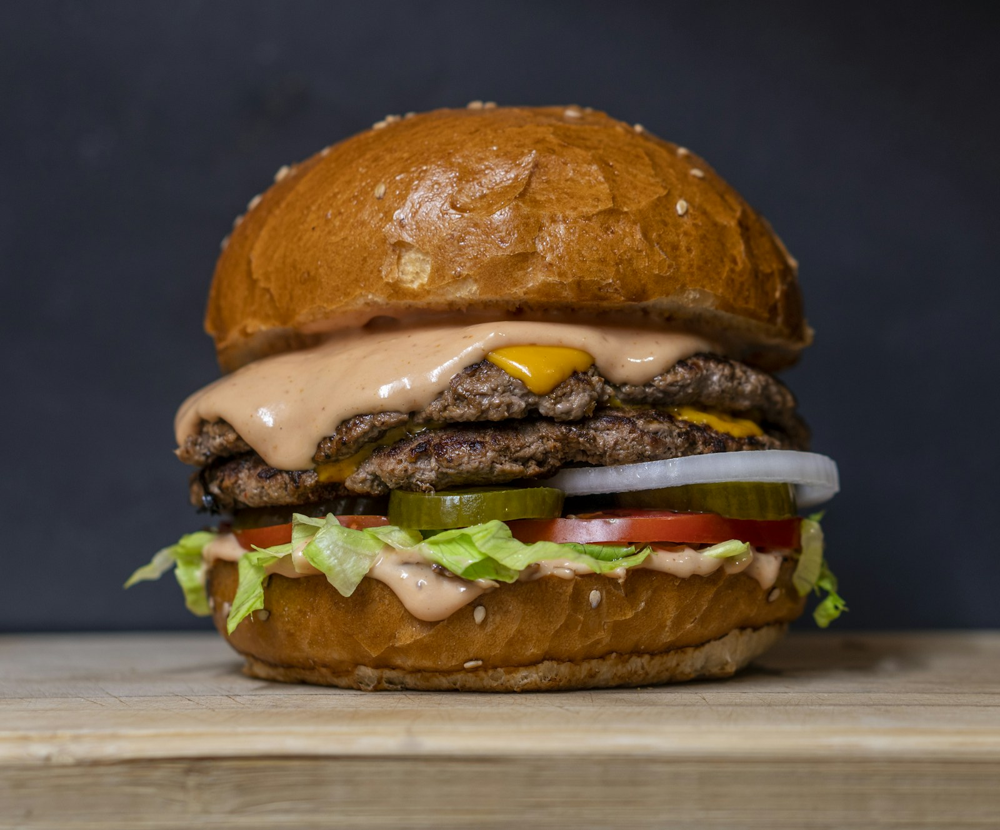
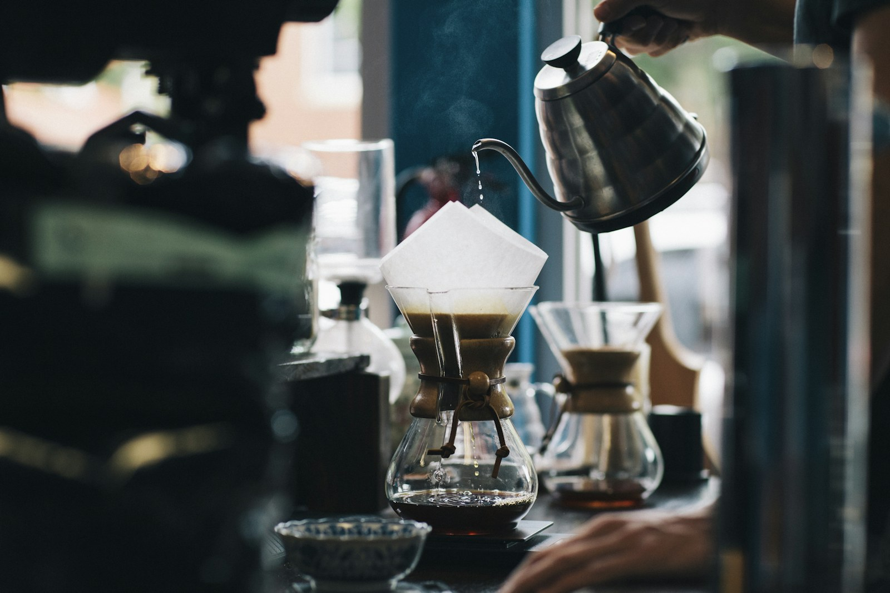
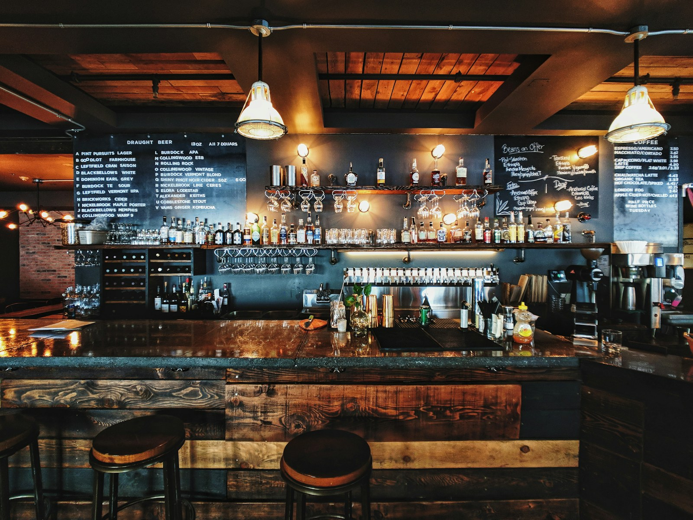

01
Hamburguesas
y bocadillos
Comida informal para disfrutar a tu ritmo: hamburguesas, bocadillos y sándwiches.

EL BOSQUE, CÁDIZ · SIERRA Y BUEN AMBIENTE
Buena comida, café, cervezas y momentos para compartir en pleno corazón de la Sierra de Cádiz.

01 / BIENVENIDO A ANDALUCÍA
Un café que alarga la conversación. Una comida informal. Una cerveza con amigos. En Café-Pub Andalucía hay espacio para esos pequeños momentos que saben a desconectar.
Estamos en El Bosque, en la Sierra de Cádiz. Un punto de encuentro para disfrutar de hamburguesas, bocadillos y algo para compartir, o simplemente hacer una pausa en buena compañía.
Encuentra tu momento03 / LO BUENO ES COMPARTIRLO
Comidas y cenas informales, café y bebidas.
Tú eliges el momento; la compañía lo hace especial.

Galería de inspiración: las fotografías son representativas y no muestran el establecimiento ni sus platos reales.
04 / NOS VEMOS EN EL BOSQUE
Acércate a Café-Pub Andalucía.
Te dejamos el camino y el teléfono.